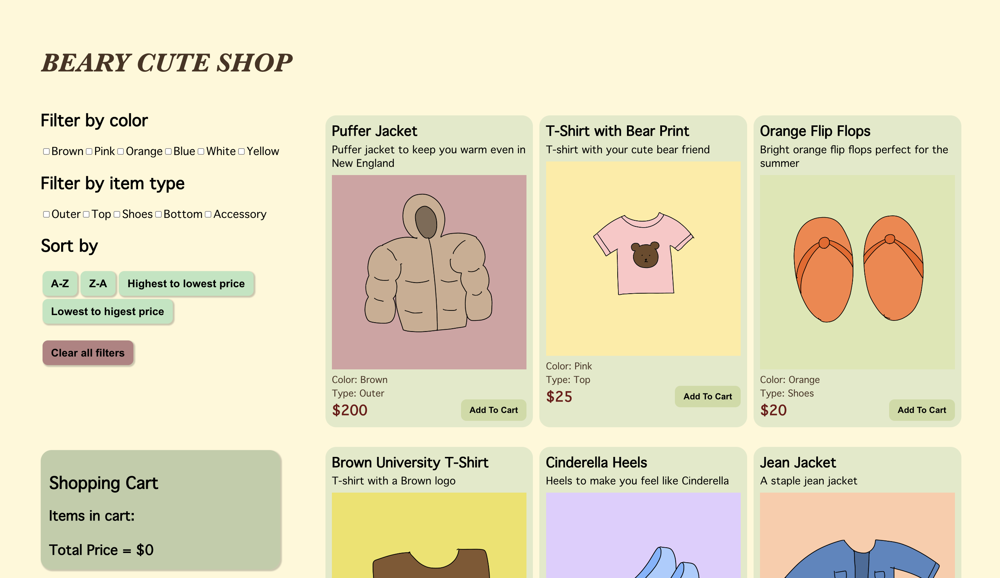

Development
Beary Cute Shop
Objective
The goal of the application is to enhance the shopping experience for customers at Beary Cute Shop. It makes the shopping easier for users by allowing users to navigate items that they want more easily and quickly. It has filtering and sorting options to broaden our target audience (for example, users can sort by price, so we can target both customers who are looking for pricier and cheaper items). Thus, users can shop a variety of items easily and conveniently by adding each item to the cart and keeping track of the total price.
This project uses React to experiment with interactive functions using different states.
Usability Principles
To make the filtering and sorting as easy as possible, I had a flexbox with two separate flexbox within the big flexbox. One of the flexboxes had the filtering and sorting, while the other had the items displayed. This allows the users to filter and sort as they look for items without having to scroll up and down the page. I also used a checkbox for the filters to allow users to filter items with multiple categories. Sorting can be done by buttons and there is a "clear all filters" button to reset all filters and sortings.
By having individual flexboxes for each item the contains name, description, and price of the item, users can easily read and understand each item on the website. There is also a button to add to the cart for each item.
Lastly, the shopping cart is below the sorting and filtering, which helps users visualize the items in the cart and the total price of the cart. Users can also remove the items in the cart using a button next to each item in the cart.
Design Thinking
Organization of Components
ClothingItem components were used to display the item name, description, price, image, and types (type and color of the item for filtering). There are buttons to add and remove items to the cart. There are also buttons to filter and sort items.
How Data is Passed Down Through Components
Through the ClothingItem component, we retrieve item information. The ClothingItem component maps all items in the clothing data. Essentially, the App filters and updates the clothing items in the data to by displayed by updating the states, while the component takes those items that are filtered and retrieves the information of those items to be displayed on the website. I used a variety of properties of the items (name, price, etc.) as props to pass them into the component so that they are always accessible.
I used different states to track the items to be displayed, the buttons (filtering) selected or clicked, item names in the cart, and the total price in the cart. I updated the state of the items to be displayed, which was integrated with the filter and sort buttons selected and clicked (I kept track of the selection of each button using each state--one for the color and the other for the item type). The "clear all filters" resets all states to the original (except for the cart). Lastly, the cart also has two states: one for the item list and the other for the total price. The state of the item in the cart is updated as the user adds and removes items to the cart using the button as well as the state of the total price. The name and price of each item in the cart is retrieved from the clothing data by mapping all elements in the cart's current state.
How the User Triggers State Changes
Checking the filter button filters the data so that only the items that correspond to the category selected are displayed. Clicking the sorting button sorts the data on display according to the sorting selected by the user. Lastly, the "clear all filters" button allows the user to reset all filters and the website displays all the data as the original (without filters and sorting).
Another part is the cart: whenever users click on the "add to cart" button for an item, the item list in the cart gets updated with the new item and the total price increments by the price of the added item.
Check out the final product of Beary Cute Shop!

Check out the final product of Beary Cute Shop!
Key Takeaways
1. React's functions to set states and pass data through components allows interactive user experience.
2. How the data are presented (i.e. sorted and filtered) is a huge factor for the useability and accessibility of the interface.